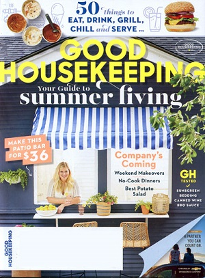

1

Good Housekeeping
A prominent magazine for mothers, Good Housekeeping offers advice and articles on cooking, home improvement, and dealing with children.
2

Better Homes & Gardens
This action-oriented publication covers various actions and challenges associated with home improvement and gardening. Expect detailed tips on subjects ranging from interior decorating to healthy cooking.
3

Martha Stewart Living
It is perfect for those who want to be inspired into improving your home, garden and cooking skills. For brand new recipes, articles, and DIY projects, no one is as well known and respected as Martha Steward